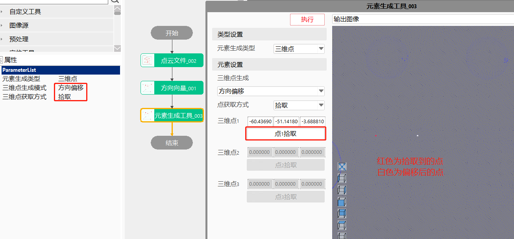

生成空间中的基本元素：空间点、空间直线、空间线段、空间平面、长方体、圆柱体等，为后续其他点云工具的数据链参数做准备。元素的生成方式可以人工输入数据生成，也可以拾取已有点数据来完成。
元素生成工具主要用于生成空间几何基本元素，为其他工具提供链接；
方法一：XYZ坐标模式：手动输入三维点坐标（X,Y,Z）生成点元素
Step1:双击元素生成工具，分别在“三维点X坐标”、“三维点Y坐标”、“三维点Z坐标”处输入三维点的坐标值；
Step2:运行选中的元素生成工具，输出窗口可以看到生成的三维点坐标；
方法二：点偏移 + 三维点获取方式拾取：参考拾取到的点进行固定偏移来生成点元素
Step1:添加元素生成工具，在属性界面“三维点生成模式”：点偏移，三维点获取方式：拾取；
Step2:双击元素生成工具进行数据链接，输入点云数据（需要设置输入图像进行三维点拾取）、偏移量设置；
Step3:打开高级界面，点击”点1拾取“按钮，可以在视图中点击想要设置的特征点；
Step4:点击执行按钮，可以在视图中看到固定偏移后的特征点；
注：高级界面中红色点表示拾取的点，白色点表示偏移后的点；
方法四：方向偏移 + 三维点获取方式拾取：参考拾取到的点进行方向偏移来生成点元素
Step1:添加元素生成工具，在属性界面“三维点生成模式”：方向偏移，三维点获取方式：拾取；
Step2:双击元素生成工具进行数据链接，输入点云数据（需要设置输入图像进行三维点拾取）、方向向量(可以是直线或线段的方向向量，或三维点作为方向向量)、偏移量设置；
Step3:打开高级界面，点击”点1拾取“按钮，可以在视图中点击想要设置的特征点；
Step4:点击执行按钮，可以在视图中看到特定方向偏移后的特征点；
注：高级界面中红色点表示拾取的点，白色点表示偏移后的点；

方法五：方向偏移 + 三维点获取方式引用：参考引用到的点进行特定方向偏移来生成点元素
Step1:添加元素生成工具，在属性界面“三维点生成模式”：方向偏移，三维点获取方式：引用；
Step2:双击工具打开数据链界面，设置方向向量(可以是直线或线段的方向向量，或三维点作为方向向量)和偏移量；
Step3:选中工具运行，即可生成特定方向上的偏移点；
方法一：两点式生成三维直线
Step1:在工具属性界面选中三维直线生成模式：两点式，三维点获取方式：引用
Step2:双击工具打开参数链界面，然后链接“起始点”、“终止点”，然后点击运行工具；


其他元素生成的操作方式原理与点、线的生成方式相似，在此不在赘述，使用者可自行设置；
| 参数名称 | 参数描述 |
|---|---|
| 输入点云数据 | 输入点云图像 |
| 三维点X/Y/Z坐标 | 三维点生成模式下，XYZ坐标 |
| 原始点 | 三维点生成模式下，点偏移、方向偏移时原始点坐标 |
| 偏移X/Y/Z | 三维点生成模式下，点偏移时的偏移量 |
| 起始点 | 三维直线生成模式下，两点式时使用 三维线段生成模式下，两点式、点+方向向量+线段长度、点+倾斜+旋转+线段长度、垂线段时使用 |
| 终止点 | 三维直线生成模式下，两点式时使用 三维线段生成模式下，两点式时使用 |
| 三维点 | 三维直线生成模式下，点斜式、位置+倾斜角+旋转角、垂直线时使用 三维平面生成模式下，点+法向量时使用 |
| 方向向量 | 三维点生成模式下，方向偏移时使用 三维直线生成模式下，点斜式、平行直线时使用 三维线段生成模式下，点+方向向量+线段长度、平行线段时使用 |
| 倾斜角 | 三维直线生成模式下，位置+倾斜角+旋转角时使用 三维线段生成模式下，点+倾斜角+旋转角+线段长度时使用 三维圆形生成模式下，倾斜角+旋转角+圆心+半径、倾斜角+旋转角+偏移量+半径时使用 |
| 旋转角 | 三维直线生成模式下，位置+倾斜角+旋转角时使用 三维线段生成模式下，点+倾斜角+旋转角+线段长度时使用 三维圆形生成模式下，倾斜角+旋转角+圆心+半径、倾斜角+旋转角+偏移量+半径时使用 |
| 给定直线 | 三维直线生成模式下，平行直线、垂直线时使用 三维线段生成模式下，垂线段时使用 |
| 给定线段 | 三维线段生成模式下，平行线段时使用 |
| 偏移量 | 三维点生成模式下，方向偏移时使用 三维直线生成模式下，平行直线时使用 三维线段生成模式下，平行线段时使用 三维平面生成模式下，法向量+偏移、平行平面时使用 三维圆形生成模式下，法向量+偏移+半径、倾斜角+旋转角+偏移+半径时使用 |
| 线段长度 | 三维线段生成模式下，点+方向向量+线段长度、点+倾斜+旋转+线段长度时使用 |
| 三维点1/2/3 | 三维平面生成模式下，三点式时使用 三维圆形生成模式下，三点式时使用 |
| 半径 | 三维圆形生成模式下，平面+半径、法向量+圆心+半径、法向量+偏移+半径、倾斜角+旋转角+圆心+半径、倾斜角+旋转角+偏移+半径时使用 圆柱体生成模式下，基于点、基于线时使用 球体生成模式下，基于球心+半径时使用 |
| 平面 | 三维圆形生成模式下，平面+半径时使用 |
| 法向量 | 三维平面生成模式下，点+法向量、法向量+偏移时使用 三维圆形生成模式下，法向量+圆心+半径、法向量+偏移+半径时使用 |
| 给定平面 | 三维平面生成模式下，平行平面、垂直平面时使用 |
| 三维直线 | 三维平面生成模式下，垂直平面时使用 |
| 中心点 | 三维矩形生成模式下，中心点+方向向量+尺寸时使用 长方体生成模式下使用 |
| 左上角点 | 三维矩形生成模式下，左上点+方向向量+尺寸时使用 |
| 长/宽/高方向向量 | 三维矩形生成模式下使用 |
| 长/宽/高尺寸 | 三维矩形/长方体生成模式下使用 |
| 圆心 | 三维圆形生成模式下，法向量+圆心+半径、倾斜角+旋转角+圆心+半径时使用 |
| 长方体长/宽/高正方向向量 | 长方体生成模式下，基于中心点+长宽高正方向向量+尺寸使用 |
| 输入坐标系 | 长方体生成模式下，基于坐标系+尺寸使用 |
| 轴线一点 | 圆柱体生成模式下，基于点时使用 |
| 轴线方向 | 圆柱体生成模式下，基于点时使用 |
| 轴线 | 圆柱体生成模式下，基于线时使用 |
| 球心 | 球体生成模式下使用 |
| 球上一点 | 球体生成模式下，基于球心+球上一点时使用 |
| 参数名称 | 参数描述 |
|---|---|
| 元素生成类型 | 选择想要生成的基本元素，基本元素包括：三维点、三维直线、三维线段、三维平面、三维矩形、三维圆形、长方体、圆柱体、球体 |
| 三维元素生成模式 | 指元素的生成模式，不同元素的生成方式有多种，具体如下： 三维点生成模式：XYZ坐标、点偏移、方向偏移 三维直线生成模式：两点式、点斜式、位置+倾斜角+旋转角、平行直线、垂直线 三维线段生成模式：两点式、点+方向向量+线段长度、点+倾斜角+旋转角+线段长度、平行线段、垂线段 三维平面生成模式：三点式、点+法向量、法向量+平移、平行平面、垂直平面 三维矩形生成模式：左上点+方向向量+尺寸、中心点+方向向量+尺寸 三维圆形生成模式：三点式、平面+半径、法向量+圆心+半径、法向量+偏移+半径、倾斜角+旋转角+圆心+半径、倾斜角+旋转角+偏移+半径 长方体生成模式：中心点+长宽高方向向量+尺寸、坐标系+尺寸 圆柱体生成模式：基于点、基于线 球体生成模式：基于球心+半径、基于球心+球上一点 |
| 三维点获取方式 | 引用：引用其他工具的输出结果；拾取：使用交互式的方式来选取三维点 |
高级界面参数与属性窗口参数一致，交互相关参数如下：
| 按钮名称 | 参数描述 |
|---|---|
| 点1/2/3拾取 | 在高级界面图像中，相应位置点击即可拾取到该位置的点 |
| 参数名称 | 参数描述 |
|---|---|
| 输出三维点 | 输出三维点的X、Y、Z坐标值 |
| 输出三维直线 | 输出三维直线 |
| 输出直线方向向量 | 输出三维直线的方向向量 |
| 输出三维线段 | 输出三维线段 |
| 输出线段方向向量 | 输出三维线段的方向向量 |
| 三维平面 | 输出三维平面 |
| 三维矩形 | 输出三维矩形 |
| 三维圆形 | 输出三维圆形 |
| 长方体 | 输出三维立方体 |
| 圆柱体 | 输出圆柱体 |
| 球体 | 输出球体 |
| 参数名称 | 参数描述 |
|---|---|
| 输出三维点 | 输出三维点的X、Y、Z坐标值 |
| 输出三维直线 | 三维直线：StartPoint，两点式生成直线时起始点三维坐标值 三维直线：EndPoint，两点式生成直线时终止点三维坐标值 三维直线：Direction，三维直线的方向 三维直线：Tilt，直线倾斜角 三维直线：Rotation，直线旋转角 三维直线：方向向量，直线的方向向量 |
| 输出直线方向向量 | 输出三维直线的方向向量； |
| 输出三维线段 | 三维线段：Pos，三维线段的起始点 三维线段：Dir，三维线段的方向 三维线段：Tilt，三维线段倾斜角 三维线段：Rotation，三维线段的旋转角 三维直线：方向向量，直线的方向向量 |
| 输出线段方向向量 | 输出三维线段的方向向量 |
| 三维平面 | 三维平面：平面点，拟合平面经过的点 三维平面：法向量，拟合平面的法向量 三维平面：偏移量，拟合平面相对于零平面的偏移量 三维平面：倾斜角，拟合平面法向量与Z轴的夹角 三维平面：旋转角，拟合平面法向量在XOY平面的投影向量与X轴的夹角 |
| 三维矩形 | 三维矩形：Center,三维平面中心坐标(三维坐标) 三维矩形：NormalWidth，矩形平面的宽度 三维矩形：NormalHeight，矩形平面的长度 三维矩形：Width，矩形平面的宽度 三维矩形：Height，矩形平面的长度 |
| 三维圆形 | 三维圆形：Center，三维圆形圆心三维坐标 三维圆形：Normal，三维圆形平面的法向量 三维圆形：Radius，三维圆形的半径 |
| 长方体 | 三维立方体：Center，三维立方体的中心坐标 三维立方体：NormalLength，三维立方体空间上的长度 三维立方体：NormalWidht，三维立方体空间上的宽度 三维立方体：NormalHeight，三维立方体空间上的高度 三维立方体：Length，三维立方体在沿立方体方向上的投影矩形的长度 三维立方体：Width，三维立方体在沿立方体方向上的投影矩形的宽度 三维立方体：Height，三维立方体在沿立方体方向上的投影矩形的高度 |
| 圆柱体 | 圆柱体：Pos，圆柱体中心位置的三维坐标 圆柱体：Normal，圆柱体底部平面法向量的方向 圆柱体：Radius，圆柱体中圆形半径 |
| 球体 | 球体：Center，球体球心的三维坐标 球体：Radius，球体的半径 |
| 执行结果 | 工具执行结果 |
| 执行时间 | 工具执行时间 |
参见“\Samples\3D\点云\点云卡尺工具.gvp”。